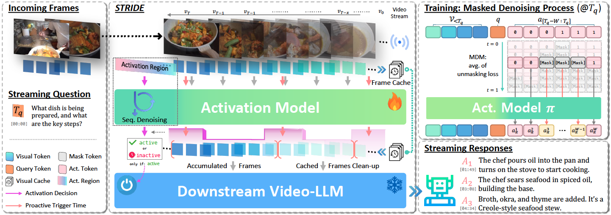

Architecture Overview
Two-stage streaming framework with masked diffusion-based activation

STRIDE operates in a streaming setting where frames arrive online. A lightweight Activation Model based on masked diffusion maintains an activation region over a sliding temporal window and iteratively denoises masked activation states to predict a coherent trigger segment. A trigger is issued only if an active span is sustained for a predefined span ratio. When activation is triggered, the accumulated frame context is forwarded to a downstream Video-LLM to generate the response.
Abstract
Recent progress in video large language models (Video-LLMs) has enabled strong offline reasoning over long and complex videos. However, real-world deployments increasingly require streaming perception and proactive interaction, where video frames arrive online and the system must decide not only what to respond, but also when to respond. In this work, we revisit proactive activation in streaming video as a structured sequence modeling problem, motivated by the observation that temporal transitions in streaming video naturally form span-structured activation patterns. To capture this span-level structure, we model activation signals jointly over a sliding temporal window and update them iteratively as new frames arrive. We propose STRIDE (Structured Temporal Refinement with Iterative DEnoising), which employs a lightweight masked diffusion module at the activation interface to jointly predict and progressively refine activation signals across the window. Extensive experiments on diverse streaming benchmarks and downstream models demonstrate that STRIDE shows more reliable and temporally coherent proactive responses, significantly improving when-to-speak decision quality in online streaming scenarios.
Key Contributions
Span-Level Activation Modeling
We reformulate the when-to-speak problem as structured sequence modeling over a temporal activation window, establishing span-level activation as the prediction unit rather than isolated per-frame binary decisions.
Masked Diffusion for Activation
STRIDE employs a lightweight masked diffusion module that jointly predicts activation sequences and captures span-level structure through boundary-aware masking strategies and progressive denoising.
Plug-and-Play & Efficient
STRIDE is fully modular and compatible with off-the-shelf Video-LLMs. With only 2B parameters and ~113ms latency, it adds minimal overhead while significantly improving proactive triggering quality.
Streaming Examples
Proactive response examples from STRIDE on diverse streaming scenarios
BibTeX
@article{kim2026stride,
title={STRIDE: When to Speak Meets Sequence Denoising for Streaming Video Understanding},
author={Kim, Junho and Lee, Hosu and Rehg, James M. and Kim, Minsu and Ro, Yong Man},
journal={arXiv preprint arXiv:2603.27593},
year={2026}
}